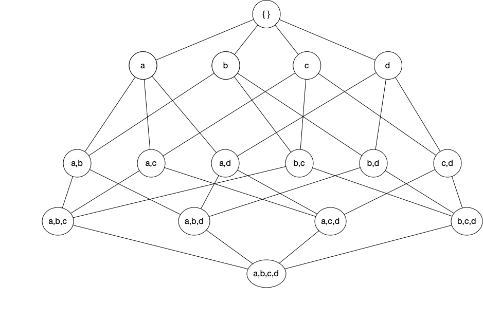
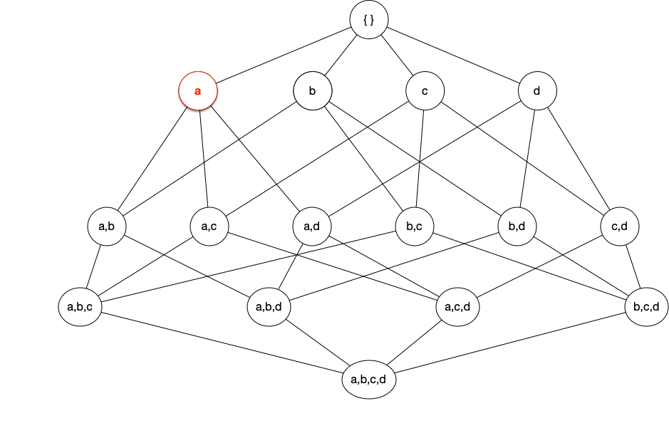
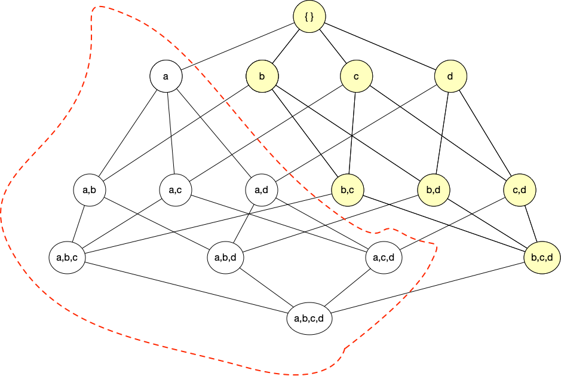
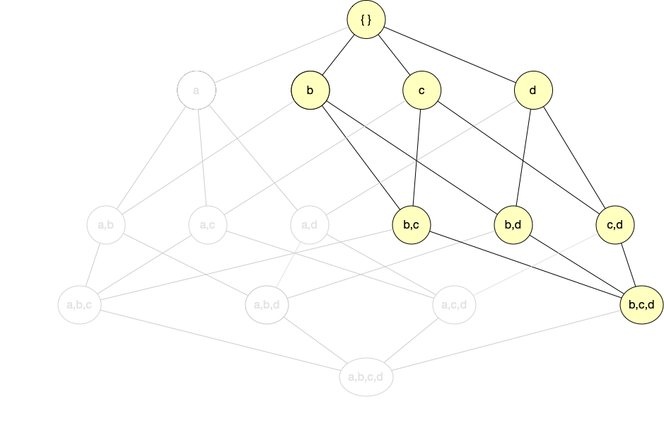
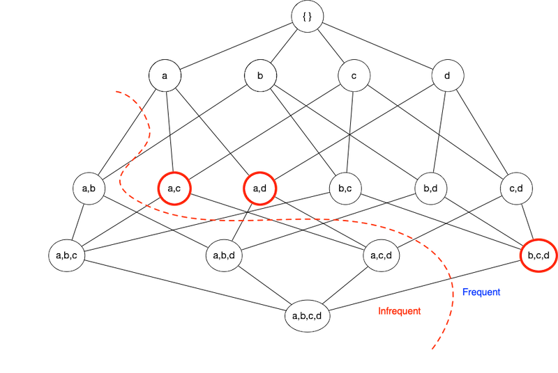
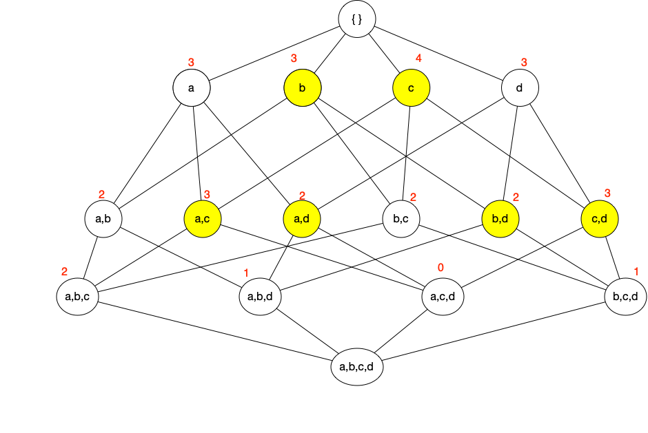

Quotes
“In God we trust, all others bring data.” - W. Edwards Deming
“Data mining is not about finding the right answers, it’s about asking the right questions.” - Anonymous
“Data mining is the process of finding needles in haystacks, and then finding the other needles that are hidden in those needles.” - Anonymous
“You didn’t know? You better call somebody!” - Road Dogg, WWE
Outline
- Background of the Problem
- Background of the Method
- R packages
- Basic example(s)
- The crux of the matter
- Symptom mining
Disclosure
Background of the Problem
Neonatal Abstinence Syndrome (NAS)
- In utero opiod exposure
- Characterized by withdrawal symptoms
- ICD-9 779.5
- ICD-10 P96.1
- Number of diagnoses increasing
- Control costs (lengthy stays)
- Detection is essential for health of infant
- Treatment is pharmacological therapy with morphine, methadone, or phenobarbital
Finnigan NAS Score (FNASS)
- 21 symptoms scored
- 5 gastronintesinal (e.g., vomit)
- 7 Centrial nerous system (e.g., tremors)
- 9 Respiratory (e.g., stuffiness, flaring)
- Scored every 4 hours
- Many scoring systems
- Lipsitz (Lipsitz, 1975)
- Neonatal Withdrawal Inventory (Zahorodny et al., 1998)
- FNASS (Finnegan et al., 1975)
Goal
- Reduce the number of items
- ESC (Curran et al., 2020)
- Mine frequent (assocaiated) symptoms
Research Team
- Tina Holt, M.D., Maine Medical Center
- Meg Curran, M.D., Maine Medical Center
- Michael Arciero, Ph.D. University of New England
- Curran, M., Holt, C., Arciero, M., Quinlan, J., Cox, D., & Craig, A. (2020). Proxy Finnegan component scores for eat, sleep, console in a cohort of opioid-exposed neonates. Hospital Pediatrics, 10(12), 1053-1058.
Background of the Method
Itemset & Rule Mining
- Find (useful) patterns in a database
- Frequent co-occurrence
- Frequent Itemset Mining
- Sequence Mining
- Market Basket Analysis
- Modern parlance
Applications
- Retail sales (MBA)
- Web usage (data information brokers)
- Congressional Voting Records
- Law enforcement profiling
- Recommender systems
- Supply chain analysis
- Extract information hidden in DNA sequences
- Gene ontology
- Concussion symptims (sleep, light sensitivity)
Terminology
Items are denoted by \(\mathcal{I} = \{i_1, i_2, \dots, i_n \}\) and transactions (a.k.a. events, observations, records) as \(T = \{t_1, t_2, \dots, t_N\}\) where \(N > n\) and \(N \gg 1\).
- “Items” are symptoms in our case
Itemset is any group of one or more items, also called basket or cart.
- e.g., \(X = \{ i_3, i_{17}, i_{1325} \}\)
Frequent item set is an itemset that meets (some) criteria.
Let \(X\) be a subset of items, then the support count is the number of transactions containing \(X\). [ { (X) = | {t_i | X t_i T }| } ]
Association Rule is an implication of the form \(X \Rightarrow Y\) where \(X \cap Y = \emptyset\).
Measures of Strength and Interest
The following measure the strength of an association or frequency of an itemset.
- The support (how often the rule applies) \[ \large{ S(X \Rightarrow Y) = \frac{\sigma(X \cup Y)}{N} } \] where \(N\) is the total number of transactions in the database.
Confidence how frequently items in \(Y\) appears in transactions that contain \(X\).
\[ \large{ C(X \Rightarrow Y) = \frac{\sigma(X \cup Y)}{\sigma(X)} } \]Lift (Brin et al., 1997), ratio of combined support from expected independence \[ \large{ L(X \Rightarrow Y) = \frac{ N \sigma(X \cup Y)}{\sigma(X) \cdot \sigma(Y)} = \frac{C(X,Y)}{S(Y)} } \]
Example
| 1 | Milk | Eggs | Diapers | Beer |
| 2 | Milk | Diapers | ||
| 3 | Eggs | Diapers | Beer | |
| 4 | Milk | Eggs | ||
| 5 | Milk | Diapers | Beer |
Consider the transaction database with \(X = \{ \text{Diapers} \}\) and \(Y = \{\text{Beer}\}\).
- Support, \(S(X,Y) = 3/5 = 0.6\)
- Confidence, \(C(X,Y) = 3/4 = 0.75\)
- Lift, \(L(X,Y) = (5 \cdot 3) / (4 \cdot 3) = 1.25\)
Binary Database
| tid | Milk | Eggs | Diapers | Beer |
|---|---|---|---|---|
| 1 | 1 | 1 | 1 | 1 |
| 2 | 1 | 0 | 1 | 0 |
| 3 | 0 | 1 | 1 | 1 |
| 4 | 1 | 1 | 0 | 0 |
| 5 | 1 | 0 | 1 | 1 |
Rule Mining / Itemset Selection
Frequent item set is an itemset that meets minimum support criteria.
Given \(d\) items, exclude the \(0\) element set and the \(d\) element set.
For each subset \(k\)-element subset \(X\), we consider the \(d-k\) element subsets \(Y\). [ {k = 1}^{d-1} {i = 1}^{d-k} = 3^d - 2^{d+1} + 1 ]
Brute force is computationally prohibitive
- Exponential time, \(O(3^d)\)
Subset reduction needed
- Apriori Algorithm
Aprior Algorithm
- Apriori Principle: If an itemset is frequent, then all its subsets are frequent.
- Contrapositive: If a subset is infrequent, then all its supersets are infrequent.




Compact representations
All frequent itemsets are a subset of the maximal itemsets.Definition - A frequent itemset is maximal if none of its immediate supersets are frequent.

Compact representations (cont)
Definition - An itemset \(X\) is closed if none of its immediate supersets has exactly the same support count as \(X\). An itemset is a closed frequent itemset if it is closed and its support is greater than or equal to minimum support.

Compact Representation Diagram
R packages
R packages
aRules- Mining Association Rules and Frequent Itemsets- Apriori and eclat algorithms
aRulesViz- Visualize Association RulesarulesSequences- Mining Frequent Sequencestidyverse- Tidy ecosystem
Install and Load
aRules 1.7-5
inspect- display rules in readable formitemFrequency- Frequency/Support for Single ItemsitemMatrix- building block for transactionsapriori- Mine frequent itemsets, association ruleseclat- Mine frequent itemsets with the Eclat algorithm.- equivalence class clustering along with bottom-up lattice traversal.
transactions- subclass ofitemMatrix. Note: Data typically starts as adata.frameor amatrixand needs to be prepared before it can be converted into transactions- Read the Manual
- https://cran.r-project.org/web/packages/arules/arules.pdf
- Check dependencies (e.g., Matrix \(\ge\) 1.4)
Example
items
1 {citrus fruit,semi-finished bread,margarine,ready soups}
2 {tropical fruit,yogurt,coffee}
3 {whole milk}
4 {pip fruit,yogurt,cream cheese ,meat spreads}
5 {other vegetables,whole milk,condensed milk,long life bakery product}
6 {whole milk,butter,yogurt,rice,abrasive cleaner}
7 {rolls/buns}
8 {other vegetables,UHT-milk,rolls/buns,bottled beer,liquor (appetizer)}
9 {pot plants}
10 {whole milk,cereals}freqItems <- apriori(Groceries,
parameter = list(
supp = 0.01,
conf = 0.5,
target = "frequent itemsets",
minlen = 3,
maxlen = 5)
)Apriori
Parameter specification:
confidence minval smax arem aval originalSupport maxtime support minlen
NA 0.1 1 none FALSE TRUE 5 0.01 3
maxlen target ext
5 frequent itemsets TRUE
Algorithmic control:
filter tree heap memopt load sort verbose
0.1 TRUE TRUE FALSE TRUE 2 TRUE
Absolute minimum support count: 98
set item appearances ...[0 item(s)] done [0.00s].
set transactions ...[169 item(s), 9835 transaction(s)] done [0.00s].
sorting and recoding items ... [88 item(s)] done [0.00s].
creating transaction tree ... done [0.00s].
checking subsets of size 1 2 3 4 done [0.00s].
sorting transactions ... done [0.00s].
writing ... [32 set(s)] done [0.00s].
creating S4 object ... done [0.00s]. items support count
1 {root vegetables,other vegetables,whole milk} 0.02318251 228
2 {other vegetables,whole milk,yogurt} 0.02226741 219
3 {other vegetables,whole milk,rolls/buns} 0.01789527 176
4 {tropical fruit,other vegetables,whole milk} 0.01708185 168
5 {whole milk,yogurt,rolls/buns} 0.01555669 153
6 {tropical fruit,whole milk,yogurt} 0.01514997 149
7 {other vegetables,whole milk,whipped/sour cream} 0.01464159 144
8 {root vegetables,whole milk,yogurt} 0.01453991 143
9 {other vegetables,whole milk,soda} 0.01392984 137
10 {pip fruit,other vegetables,whole milk} 0.01352313 133 rules support confidence
1 {other vegetables,yogurt} => {whole milk} 0.02226741 0.5128806
2 {tropical fruit,yogurt} => {whole milk} 0.01514997 0.5173611
3 {other vegetables,whipped/sour cream} => {whole milk} 0.01464159 0.5070423
4 {root vegetables,yogurt} => {whole milk} 0.01453991 0.5629921
5 {pip fruit,other vegetables} => {whole milk} 0.01352313 0.5175097
6 {root vegetables,yogurt} => {other vegetables} 0.01291307 0.5000000
coverage lift count
1 0.04341637 2.007235 219
2 0.02928317 2.024770 149
3 0.02887646 1.984385 144
4 0.02582613 2.203354 143
5 0.02613116 2.025351 133
6 0.02582613 2.584078 127set of 15 rules
rule length distribution (lhs + rhs):sizes
3
15
Min. 1st Qu. Median Mean 3rd Qu. Max.
3 3 3 3 3 3
summary of quality measures:
support confidence coverage lift
Min. :0.01007 Min. :0.5000 Min. :0.01729 Min. :1.984
1st Qu.:0.01174 1st Qu.:0.5151 1st Qu.:0.02089 1st Qu.:2.036
Median :0.01230 Median :0.5245 Median :0.02430 Median :2.203
Mean :0.01316 Mean :0.5411 Mean :0.02454 Mean :2.299
3rd Qu.:0.01403 3rd Qu.:0.5718 3rd Qu.:0.02598 3rd Qu.:2.432
Max. :0.02227 Max. :0.5862 Max. :0.04342 Max. :3.030
count
Min. : 99.0
1st Qu.:115.5
Median :121.0
Mean :129.4
3rd Qu.:138.0
Max. :219.0
mining info:
data ntransactions support confidence
Groceries 9835 0.01 0.5
call
apriori(data = Groceries, parameter = list(supp = 0.01, conf = 0.5, target = "rules", minlen = 1, maxlen = 10)) lhs rhs support
[1] {curd, yogurt} => {whole milk} 0.01006609
[2] {other vegetables, butter} => {whole milk} 0.01148958
[3] {other vegetables, domestic eggs} => {whole milk} 0.01230300
[4] {yogurt, whipped/sour cream} => {whole milk} 0.01087951
[5] {other vegetables, whipped/sour cream} => {whole milk} 0.01464159
[6] {pip fruit, other vegetables} => {whole milk} 0.01352313
[7] {citrus fruit, root vegetables} => {other vegetables} 0.01037112
[8] {tropical fruit, root vegetables} => {other vegetables} 0.01230300
[9] {tropical fruit, root vegetables} => {whole milk} 0.01199797
[10] {tropical fruit, yogurt} => {whole milk} 0.01514997
confidence coverage lift count
[1] 0.5823529 0.01728521 2.279125 99
[2] 0.5736041 0.02003050 2.244885 113
[3] 0.5525114 0.02226741 2.162336 121
[4] 0.5245098 0.02074225 2.052747 107
[5] 0.5070423 0.02887646 1.984385 144
[6] 0.5175097 0.02613116 2.025351 133
[7] 0.5862069 0.01769192 3.029608 102
[8] 0.5845411 0.02104728 3.020999 121
[9] 0.5700483 0.02104728 2.230969 118
[10] 0.5173611 0.02928317 2.024770 149 arulesViz 1.5-2
Visualizing Association Rules and Frequent Itemsets
- https://cran.r-project.org/web/packages/arulesViz/arulesViz.pdf
plot(rules, method="graph")- See also
ggraphpackage for graph and network visualizations
Frequent Sequences
Mining frequent sequential patterns with the cSPADE algorithm
- SPADE (Sequential PAttern Discovery using Equivalence classes)
- Temporal transactions (grouped by customer)
- “If a customer buys \(X\) then in the next purchase will they buy \(Y\)”?
- Web logs (\(a \to b \to c \to d\))
arulesSequences0.2-28cspade(transactions)
# create binary matrix of items
data <- data.frame(sequenceID = as.factor(c(1, 1, 1, 1, 2, 2, 3, 4, 4, 4)),
eventID = as.factor(c(1, 2, 3, 4, 1, 1, 1, 1, 2, 3)),
A = c(0, 1, 1, 1, 1, 0, 1, 0, 0, 1),
B = c(0, 1, 1, 0, 1, 0, 1, 0, 1, 0),
C = c(1, 1, 0, 1, 0, 0, 0, 0, 0, 0),
D = c(1, 0, 0, 0, 0, 0, 0, 1, 0, 0),
E = c(0, 0, 0, 0, 0, 1, 0, 0, 0, 0),
F = c(0, 0, 1, 1, 1, 0, 1, 0, 0, 1),
G = c(0, 0, 0, 0, 0, 0, 0, 1, 1, 0),
H = c(0, 0, 0, 0, 0, 0, 0, 1, 0, 1))
db <- pivot_longer(data, cols = c(3,4,5,6,7,8,9,10)) %>% filter(value > 0)sequences <- db %>%
group_by(sequenceID, eventID) %>%
summarize(
SIZE = n(),
items = paste(as.character(name), collapse = ';')
)`summarise()` has regrouped the output.
ℹ Summaries were computed grouped by sequenceID and eventID.
ℹ Output is grouped by sequenceID.
ℹ Use `summarise(.groups = "drop_last")` to silence this message.
ℹ Use `summarise(.by = c(sequenceID, eventID))` for per-operation grouping
(`?dplyr::dplyr_by`) instead.names(sequences) = c("sequenceID", "eventID", "SIZE", "items")
sequences <- data.frame(lapply(sequences, as.factor))
sequences <- sequences[order(sequences$sequenceID, sequences$eventID),]
# Convert to transaction matrix data type
write.table(sequences, "seqs.txt", sep=";", row.names = FALSE, col.names = FALSE, quote = FALSE)
trans_matrix <- read_baskets("seqs.txt", sep = ";", info = c("sequenceID","eventID","SIZE"))set of 7 sequences with
most frequent items:
A B F (Other)
4 4 4 4
most frequent elements:
{A} {B} {F} {A,F} {B,F} (Other)
1 1 1 1 1 2
element (sequence) size distribution:
sizes
1
7
sequence length distribution:
lengths
1 2 3
3 3 1
summary of quality measures:
support
Min. :0.7500
1st Qu.:0.7500
Median :1.0000
Mean :0.8929
3rd Qu.:1.0000
Max. :1.0000
includes transaction ID lists: FALSE
mining info:
data ntransactions nsequences support
trans_matrix 9 4 0.6Crux
Crux(es)
- Data frame must be converted to a transaction
- For
arulesSequencespivot_longerwrite_tableread_baskets
Symptom Mining
Symptom Mining
excoriations myoclonic_jerks cry sleep moro
0.144866385 0.004018485 0.179827205 0.355234077 0.137030340
sweat yawn mottling stuffiness sneeze
0.016073940 0.021097046 0.301185453 0.117942536 0.215993570
nasal_flaring fever respirations sucking feeding
0.012256379 0.199718706 0.223226843 0.156519992 0.235081374
vomit stool
0.119750854 0.208157525 Frequent Itemsets
items support count
[1] {excoriations, sleep, mottling} 0.03054049 152
[2] {cry, respirations, sucking} 0.03576452 178
[3] {cry, sleep, sucking} 0.04641350 231
[4] {sleep, sneeze, sucking} 0.03275065 163
[5] {sleep, respirations, sucking} 0.04098855 204
[6] {cry, sleep, fever} 0.03275065 163
[7] {sleep, sneeze, fever} 0.04139040 206
[8] {sleep, fever, respirations} 0.04560981 227
[9] {sleep, mottling, fever} 0.03475990 173
[10] {cry, sleep, stool} 0.03154511 157
[11] {sleep, sneeze, stool} 0.03335343 166
[12] {sleep, respirations, stool} 0.03496082 174
[13] {cry, sleep, feeding} 0.03134418 156
[14] {cry, sleep, sneeze} 0.03737191 186
[15] {cry, sleep, respirations} 0.05123568 255
[16] {cry, sleep, mottling} 0.03596544 179
[17] {sleep, sneeze, feeding} 0.03033956 151
[18] {sleep, sneeze, respirations} 0.04741812 236
[19] {sleep, mottling, sneeze} 0.03757284 187
[20] {sleep, mottling, respirations} 0.03697006 184 Frequent Rules
set of 42 rules
rule length distribution (lhs + rhs):sizes
3 4 5
5 36 1
Min. 1st Qu. Median Mean 3rd Qu. Max.
3.000 4.000 4.000 3.905 4.000 5.000
summary of quality measures:
support confidence coverage lift
Min. :0.01005 Min. :0.7033 Min. :0.01125 Min. :1.980
1st Qu.:0.01160 1st Qu.:0.7201 1st Qu.:0.01507 1st Qu.:2.027
Median :0.01366 Median :0.7489 Median :0.01849 Median :2.141
Mean :0.01598 Mean :0.7659 Mean :0.02103 Mean :2.234
3rd Qu.:0.01703 3rd Qu.:0.7865 3rd Qu.:0.02270 3rd Qu.:2.239
Max. :0.03737 Max. :0.9107 Max. :0.04842 Max. :4.078
count
Min. : 50.00
1st Qu.: 57.75
Median : 68.00
Mean : 79.55
3rd Qu.: 84.75
Max. :186.00
mining info:
data ntransactions support confidence
transactions 4977 0.01 0.7
call
apriori(data = transactions, parameter = list(supp = 0.01, conf = 0.7, minlen = 1, maxlen = 5, target = "rules")) lhs rhs support confidence
[1] {respirations, sucking, feeding} => {cry} 0.01105083 0.7333333
[2] {cry, fever, stool} => {respirations} 0.01004621 0.7462687
[3] {cry, sneeze, fever, respirations} => {sleep} 0.01024714 0.9107143
[4] {cry, sneeze, fever} => {sleep} 0.01547117 0.9058824
[5] {excoriations, cry, respirations} => {sleep} 0.01205546 0.8955224
[6] {cry, mottling, sneeze} => {sleep} 0.01326100 0.8684211
[7] {sneeze, fever, sucking} => {sleep} 0.01366285 0.8607595
[8] {excoriations, cry, sucking} => {sleep} 0.01084991 0.8437500
[9] {cry, sneeze, respirations} => {sleep} 0.01928873 0.8205128
[10] {excoriations, cry, mottling} => {sleep} 0.01004621 0.8064516
coverage lift count
[1] 0.01506932 4.077989 55
[2] 0.01346192 3.343096 50
[3] 0.01125176 2.563702 51
[4] 0.01707856 2.550100 77
[5] 0.01346192 2.520936 60
[6] 0.01527024 2.444645 66
[7] 0.01587302 2.423077 68
[8] 0.01285915 2.375194 54
[9] 0.02350814 2.309781 96
[10] 0.01245730 2.270198 50 Frequent Symptom Sequences
seqDB <- raw %>% mutate(sequenceID = bid, eventID = oid) %>%
select(-c(tid, bid, oid, nas, num_items, tremors_disturbed, tremors_undisturbed, tone))
seqDB <- pivot_longer(seqDB, c(1:17) ) %>% filter(value > 0)
sequences <- seqDB %>%
group_by(sequenceID, eventID) %>%
summarize(
SIZE = n(),
items = paste(as.character(name), collapse = ';')
)`summarise()` has regrouped the output.
ℹ Summaries were computed grouped by sequenceID and eventID.
ℹ Output is grouped by sequenceID.
ℹ Use `summarise(.groups = "drop_last")` to silence this message.
ℹ Use `summarise(.by = c(sequenceID, eventID))` for per-operation grouping
(`?dplyr::dplyr_by`) instead.write.table(sequences, "seqDB.txt", sep=";", row.names = FALSE, col.names = FALSE, quote = FALSE)
seq_mat <- read_baskets("seqDB.txt", sep = ";", info = c("sequenceID","eventID","SIZE"))
s1 <- cspade(seq_mat, parameter = list(support = 0.4, maxsize = 5), control = list(verbose = TRUE))
# PARAMETERS:
# support: minimum support of a sequence (default 0.1).
# maxsize: (integer) max number of items of an element of a sequence (default 10).
# maxlen: (integer) max number of elements of a sequence (default 10).
# mingap: (integer) min time diff between consecutive elements of a sequence (default none, range >= 1).
# maxgap: (integer) max time diff between consecutive elements of a sequence (default none).
# maxwin: (integer) max time diff between any two elements of a sequence (default none.set of 30943 sequences with
most frequent items:
sleep sneeze fever respirations stool (Other)
28271 17044 15417 11055 6928 15716
most frequent elements:
{sleep} {sneeze} {fever} {respirations} {stool}
25124 14124 12874 8052 5980
(Other)
31648
element (sequence) size distribution:
sizes
1 2 3 4 5 6 7 8 9 10
75 818 3448 7437 8946 6422 2809 796 169 23
sequence length distribution:
lengths
1 2 3 4 5 6 7 8 9 10
13 199 1323 4560 8189 8931 5518 1806 369 35
summary of quality measures:
support
Min. :0.4012
1st Qu.:0.4128
Median :0.4360
Mean :0.4521
3rd Qu.:0.4709
Max. :1.0000
includes transaction ID lists: FALSE
mining info:
data ntransactions nsequences support
seq_mat 4377 172 0.4 sequence support
1 <{sleep}> 1.0000000
2 <{sleep},{sleep}> 0.9941860
3 <{sleep},{sleep},{sleep}> 0.9651163
4 <{sneeze}> 0.9302326
5 <{fever}> 0.9127907
6 <{sleep},{sneeze}> 0.9069767
7 <{sleep},{sleep},{sleep},{sleep}> 0.9069767
8 <{fever},{sleep}> 0.9011628
9 <{sneeze},{sleep}> 0.8953488
10 <{stool}> 0.8837209
11 <{sleep},{sleep},{sneeze}> 0.8779070
12 <{respirations}> 0.8662791
13 <{sleep},{stool}> 0.8662791
14 <{sneeze},{sleep},{sleep}> 0.8662791
15 <{fever},{sleep},{sleep}> 0.8662791
16 <{sleep},{sleep},{sleep},{sleep},{sleep}> 0.8546512
17 <{cry}> 0.8430233
18 <{sleep},{sleep},{stool}> 0.8430233
19 <{fever},{sneeze}> 0.8430233
20 <{sneeze},{sneeze}> 0.8430233
21 <{sleep,sneeze}> 0.8372093
22 <{stool},{sleep}> 0.8372093
23 <{sleep},{sneeze},{sleep}> 0.8372093
24 <{fever},{sleep},{sleep},{sleep}> 0.8313953
25 <{sleep},{fever}> 0.8313953
26 <{respirations},{sleep}> 0.8255814
27 <{sleep},{respirations}> 0.8255814
28 <{sneeze},{sleep},{sleep},{sleep}> 0.8197674
29 <{cry},{sleep}> 0.8139535
30 <{sleep},{sleep},{sleep},{sneeze}> 0.8081395# Get induced temporal rules from frequent itemsets
r1 <- as(ruleInduction(s1, confidence = 0.9, control = list(verbose = TRUE)), "data.frame")
head(r1) rule support
226 <{respirations},{sleep},{sleep},{sucking}> => <{sucking}> 0.4418605
266 <{respirations},{sleep},{respirations},{sucking}> => <{sucking}> 0.4011628
1338 <{stool}> => <{stool}> 0.7965116
1376 <{stool,sucking}> => <{stool}> 0.4011628
1436 <{stool},{stool}> => <{stool}> 0.7267442
1441 <{sleep,stool}> => <{stool}> 0.6279070
confidence lift
226 0.9156627 1.175328
266 0.9078947 1.165357
1338 0.9013158 1.019910
1376 0.9200000 1.041053
1436 0.9124088 1.032463
1441 0.9000000 1.018421